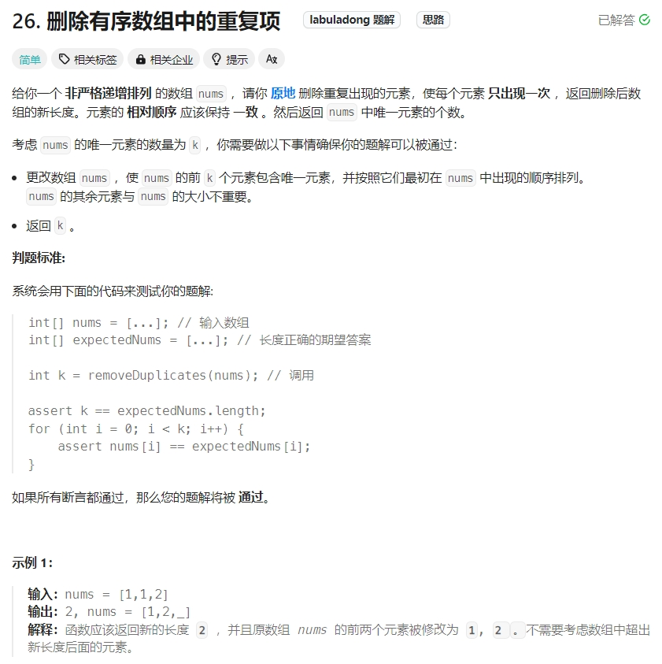

双指针数组解法
之前博客介绍了采用双指针法来解决链表类题目Link。
本博文主要介绍用双指针法来解决数组类题目，并且把数组类相关的解题思路也放在此博客中。
在处理数组和链表相关问题时，双指针技巧是经常用到的，双指针技巧主要分为两类：左右指针和快慢指针。
- 左右指针: 两个指针相向而行或者相背而行。
- 快慢指针：两个指针同向而行，一快一慢。
1. 删除有序数组中的重复项

对于此代码，原本有两个解法：
解法1：采用unique函数。时间复杂度O(Nlogn)，空间复杂度为O（1）
class Solution {
public:
int removeDuplicates(vector& nums) {
sort(nums.begin(),nums.end());
// 解法1:时间复杂度O(Nlogn)，空间复杂度为O（1）
// 采用unique来“去除”容器或者数组中相邻元素的重复出现的元素
auto iter=unique(nums.begin(),nums.end());//返回一个指向去重后序列末尾的迭代器。
// unique 并不会改变容器的大小，只是将不重复的元素移到前面，返回去重后末尾的迭代器（最后一个不重复元素）
// 去重过程：不停的把后面不重复的元素移到前面来，也可以说是用不重复的元素占领重复元素的位置。
return iter-nums.begin();//这就是不重复的元素的个数
}
};
解法2：采用键值对,时间复杂度为O（n），由于需要一个键值对，空间复杂度估计也是O（n）
class Solution {
public:
int removeDuplicates(vector<int>& nums) {
// 解法2：采用键值对,时间复杂度为O（n）
map group;//会自动根据键的大小进行排序，而输入的数组本身就是递增的。所以可以使用
for(int i=0;i<nums.size();i++)
{
group[nums[i]]++;
}
nums.clear();//清空，需要重新放入，用于验证
for(auto value:group)//遍历map中的每个对
{
nums.push_back(value.first);//获取键
}
return nums.size();
}
};